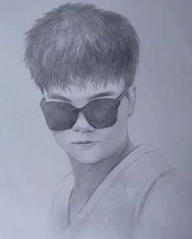

段启超 Qichao Duan
中国科学技术大学 · 电子信息专业 · 硕士研究生
本科毕业于华中农业大学信息学院信息与计算科学专业
邮箱：duanqichao888 [at] gmail.com；校内邮箱：qcDuan [at] mail.ustc.edu.cn

个人简介
我是中国科学技术大学电子信息专业硕士研究生，本科毕业于华中农业大学信息学院信息与计算科学专业， GPA 为 3.78/4.0，并获华中农业大学本科毕业论文创新奖、本科毕业优秀论文、优秀毕业生、毕业生三好学生等荣誉。本科阶段受 何新卫老师 指导，系统参与计算机视觉、目标检测、 异常检测和数据驱动智能分析方向的科研训练。
我关注高效视觉感知模型、少样本异常检测、视觉-语言模型及其在真实场景中的落地应用。 目前已作为第一作者完成 EI 论文与软件著作权，具备从论文阅读、模型复现、算法改进、 实验验证到系统实现的完整训练经历；在多项学科竞赛和工程项目中担任队长、核心算法设计者 与计算机视觉模块负责人。
科研成果
- Optimization of YOLOv8 algorithm for traffic sign object detection based on MBCA and C2f AKConv module. 第一作者，CASAT 2025，EI，ISBN: 979-8-3315-38903。围绕复杂交通场景下的小目标与背景干扰问题改进 YOLOv8， 设计并融合 MBCA 与 C2f AKConv 模块，完成模型结构改进、实验对比和论文撰写。
- 图像识别智能分析系统 V1.0。 软件著作权，第一作者，登记号：2025SR0923992，2025.03-2025.06。独立承担核心识别流程设计、 功能实现与成果材料整理，形成可运行、可展示的图像识别分析系统。
- 开放表征学习与 Few-Shot 异常检测研究。 科研小组，2023.05-2025.06。参与少样本异常检测算法研究与实现，实践 Prompt_AD、 注意力机制和开放表征学习方法，积累 PyTorch 实验、消融分析与模型调试经验。
项目经历
- 视觉-语言大模型在动物关键点检测中的应用。 暑期实训，2025.07-2025.08。围绕视觉-语言模型在动物姿态理解中的应用开展方案调研、 任务建模和实验实现，探索多模态语义信息对关键点检测的增强作用。
- 聚类分析优化研究。 毕业设计，2025.06-2026.06。面向大学生综合素质分析开展数据建模，完成数据清洗、特征构建、 K-Means/DBSCAN 等聚类方法对比、参数选择和聚类质量评价。
- 扶沟县财政局预算数据支持。 实习项目，2025.05-2025.06。负责预算相关数据清洗、整理和分析，参与预算预测模型构建， 将数据分析结果用于预算编制、趋势判断和决策支持。
- 垃圾分类识别系统。 竞赛项目，2024.02-2024.04。参与图像识别与分类系统开发，负责识别流程实现与实验调试， 项目获华中农业大学“神农杯”三等奖。
技术能力
熟悉 Python、PyTorch 与常用深度学习实验流程，具备目标检测、异常检测、Few-Shot Learning、 Prompt Learning、注意力机制、数据清洗与建模分析经验。能够围绕真实任务完成从问题定义、 数据处理、模型实验到结果分析和系统交付的完整闭环。
获奖荣誉
- 华中农业大学本科毕业论文创新奖、华中农业大学本科毕业优秀论文。
- 华中农业大学优秀毕业生、毕业生三好学生；校级三好学生、优秀志愿者、优秀学委、优秀寝室长、优秀团员。
- 2025 年蓝桥杯全国软件和信息技术专业人才大赛湖北省优秀奖（队长）。
- 2025 年中国机器人及人工智能大赛湖北省优秀奖（队长、计算机视觉模块负责人）。
- 2025 年“挑战杯”全国大学生课外学术科技作品竞赛优秀奖（核心算法设计）。
- 2024 年美国大学生数学建模竞赛 MCM/ICM S 奖（队长）。
- 2025 年全国大学生英语竞赛（NECCS）C 类二等奖；2023 年全国大学生英语听力大赛一等奖。
志愿服务
- “一起云支教”长期志愿者，持续参与线上支教与公益陪伴。
- 河南抗洪救灾“优秀志愿者”；河南蓝天救援队志愿者。